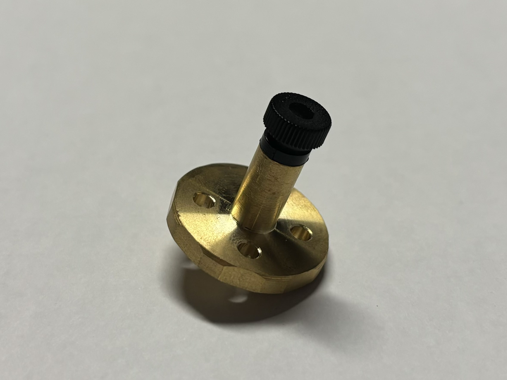

Projects
Personal Projects
Machine Learning Based Lip-Reading Model Project, CK | Bloomfield Hills, MI
11/2023 – 03/2024
- Enhanced a Python neural-network by utilizing Google's TensorFlow library, successfully training the model to accurately lip-read and detect specific phrases, improving recognition accuracy by 14%.
- Partnered with an ethics consultant in Detroit to expand and diversify the dataset, promoting inclusivity and improving the overall effectiveness by 11% of the lip-reading model.
National High School Data Science Competition, Veritas AI | Virtual Location
12/2023 – 02/2024
- Forecasted the "College Happiness Score" for U.S. universities by analyzing datasets and employing Gradient Boosting Machine with advanced imputation techniques, enhancing model accuracy by 28%.
- Developed significant proficiency in various machine learning models, data imputation strategies, feature engineering, and model evaluation.
Class Projects
Top Fabrication, RHIT | Terre Haute, IN
10/2024
- Fabricated a top using brass. Acquired hands-on experience in setting up and using machinery including a bandsaw, lathe, and drill press. Learned the importance of approaching fabrication analytically, especially having a detailed model plan and fabrication sequence.

CLick Bricks, RHIT | Terre Haute, IN
10/2024 - 11/2024
- Created "Click Bricks" to address lack of toys that presents young children with sentence patterns in a entertaining manner for local non profit disability learning center, Reach Services